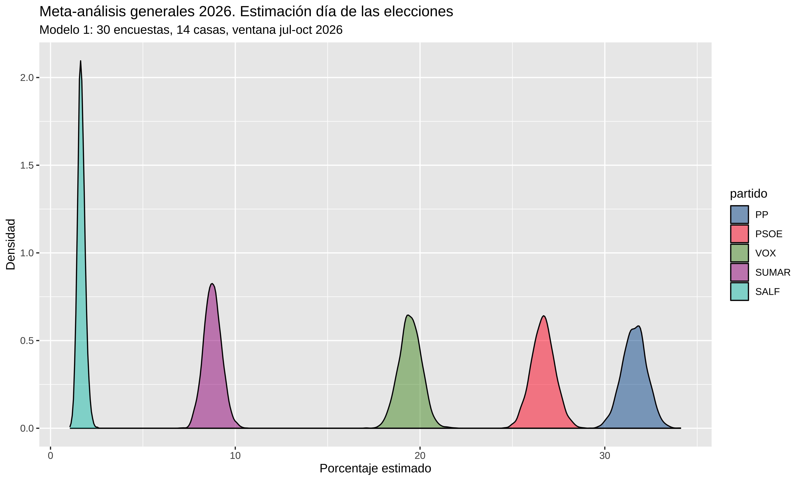

Show the code
library(tidyverse)
library(DT)
library(brms)
library(tidybayes)
source(here::here("2026/10/preparar_meta.R"))José Luis Cañadas Reche
October 10, 2026
October 26, 2026
Entran tres encuestas nuevas de ciento76. La de SocioMétrica (campo del 1 de septiembre al 25 de octubre, n = 3.223) publica las seis principales, incluida SALF, y entra en el modelo 1, que pasa de 48 a 49 encuestas. El modelo 2 se queda en 100, porque la de SocioMétrica no entra en el bloque. Sigma Dos (n = 3.122) no publica SALF y NC Report no publica su tamaño muestral, así que ninguna de las dos entra en estos modelos. Los dos modelos están reajustados con las nuevas.
Entra la encuesta de IMOP para El Confidencial (campo del 13 al 16 de octubre, n = 1.000). Es la única publicada desde el 11 de octubre en ciento76 y en objetivo176. El modelo 1 pasa de 47 a 48 encuestas y el modelo 2, de 99 a 100. Los dos modelos están reajustados con ella.
Corregido un error en los datos del modelo 2 (el reparto del BLOQUE entre los partidos regionales). Como explica el post, cada encuesta debía entrar con los votos del BLOQUE (n = 1.000 y un BLOQUE del 11 % son 110 votos), pero el código calculaba los votos de cada partido sobre los votos del BLOQUE en lugar de sobre la muestra, y quedaban unas 8 veces menores. La corrección cambia las cifras del modelo 2, no las del modelo 1 (los grandes partidos). Las del modelo 1 pueden variar por otro motivo: el post incluye ya las encuestas publicadas hasta el 11 de octubre.
Ya hice metaanálisis antes, en las generales de julio de 2023 y en las europeas de junio de 2024
Ahora toca hacerlos para las elecciones del próximo 29 de noviembre de 2026
Las anteriores veces había hecho un meta-análisis para obtener estimaciones de porcentaje de voto, teniendo en cuenta el efecto de la casa encuestadora como efecto aleatorio y el tiempo hasta el día de las elecciones como efecto fijo.
En las andaluzas de mayo de 2026 añadí una estimación bayesiana de escaños. Teniendo solo el agregado de encuestas a nivel de Andalucía, tuve que hacer una asunción sobre como se distribuye el voto a nivel provincial. Quiero hacer lo mismo para las generales, pero aparte del problema de no tener el voto por provincias, no se informa siquiera por comunidad autónoma (recordemos que lo que usamos es el resultado que publican las casas encuestadoras, no los microdatos).
Y por si fuera poco, en la mayoría de las encuestas sólo se informa de la estimación de los principales partidos, obviando los regionales (PNV, BNG, Junts, etc.), y tener una estimación de estos partidos es necesario para hacer una estimación provincial medianamente coherente.
Así que el ejercicio tiene dos partes. En esta primera:
Y en la segunda parte:
Todo este ejercicio es incompleto. En la segunda parte añado una capa de error histórico agregado (cómo se equivocan las encuestas en bloque el día de la votación), pero lo que de verdad haría falta es calibrar por empresa encuestadora: es posible que una casa se equivoque siempre a favor de los mismos, y eso el meta-análisis no lo puede ver. Esa calibración por casa queda pendiente.
La fuente principal es la tabla de encuestas de ciento76 las descargo con (descargar_encuestas_ciento76.R). Y luego un mínimo tratamiento para construir el dataset que voy a utilizar. (preparar_meta.R)
enc <- read_csv(
here::here("./encuestas_con_partidos_regionales.csv"),
show_col_types = FALSE
) |>
mutate(fecha = parse_fecha_campo(Campo)) |>
filter(!is.na(fecha), fecha >= fecha_inicio_grande)
enc |>
select(
Encuestadora,
Campo,
PP,
PSOE,
VOX,
Sumar,
Podemos,
SALF,
Junts,
ERC,
PNV,
`EH Bildu`,
BNG,
CC,
UPN,
regionales_completos
) |>
datatable(options = list(scrollX = TRUE))Un apunte sobre la tabla de arriba: el SUMAR del modelo 1 no es la columna Sumar a secas: es la suma de las dos listas, Sumar + Podemos, (anticipando un poco lo de Frente Amplio) y una encuesta solo entra al modelo 1 si reporta las dos.
Añadí columna regionales_completos: es FALSE en la mayoría. Salvo para algunas en las que pude obtener estimaciones regionales.
rellenar_regionales_o176() en preparar_meta.R: con ella el modelo 2 pasa de 68 encuestas de 7 casas a 97 de 10, y el peso de ElectoPanel baja del 84% de las encuestas a un 59% de las encuestas (su peso en votos del bloque queda en el 63%: sus n enormes pesan más que su número).Vale, si tuviera datos de estimaciones de partidos regionales en la mayoría de las encuestas podría plantearme un modelo multinomial con 13 categorías (los 5 grandes + SALF + 7 regionales + resto). Pero como no es así, propongo hacer dos modelos en cascada.
En la simulación, cada muestra del posterior del modelo 1 fija el tamaño del BLOQUE y se reparte con la composición del modelo 2.
Resultado: 13 valores que suman 100 con la distribución conservada.
Para el modelo 1 he quitado encuestas del CIS (su cocina electoral es muy distinta y se necesitaría corregir el sesgo por recuerdo de voto que el CIS decidió no hacerlo) y las de ElectoPanel (que sí se utilizan para el modelo 2 por ser de las pocas que dan estimaciones de partidos regionales). Otra decisión que he tomado es considerar solo las encuestas desde el 1 de julio de 2026 en adelante
# las cifras del texto salen de las mismas funciones que alimentan el
# ajuste: se actualizan solas cuando entren encuestas nuevas
source(here::here("2026/10/ajustar_meta.R"))
dat_g <- prep_grande()
#> Fuera (sin n publicado): 1 encuestas — InvyMark
#> Fuera (casas_fuera: CIS, ElectoPanel ): 18 encuestas
dat_b <- prep_bloque()
n_enc_m1 <- nrow(dat_g)
n_casas_m1 <- n_distinct(dat_g$encuestadora)
n_enc_m2 <- nrow(dat_b)
n_casas_m2 <- n_distinct(dat_b$encuestadora)
# peso de ElectoPanel en los votos del bloque del modelo 2
pct_ep_m2 <- sum(dat_b$bloque_votos[dat_b$encuestadora == "ElectoPanel"]) /
sum(dat_b$bloque_votos)
cat("Modelo 1:", n_enc_m1, "encuestas,", n_casas_m1, "casas\n")
#> Modelo 1: 30 encuestas, 14 casas
cat("Modelo 2:", n_enc_m2, "encuestas,", n_casas_m2, "casas\n")
#> Modelo 2: 100 encuestas, 10 casasUpdate (a 26/10/2026): el modelo 1 se ajusta con 30 encuestas de 14 casas, tras quitar el CIS, ElectoPanel y las encuestas sin tamaño muestral publicado. Conforme se vayan acercando las fechas de las elecciones iré añadiendo más (el script de descarga está preparado para eso).
La parte menos obvia del invento es cómo se pegan los dos modelos, aunque en realidad es sencilla.
Qué entrena el modelo 2. Es un multinomial condicional: el trials de su fórmula no es la muestra completa de la encuesta, sino los votos totales del BLOQUE en esa encuesta. Por ejemplo, una encuesta con n = 1.000 y un bloque del 11% entra al modelo 2 como 110 votos repartidos en 8 celdas:
El modelo 2 ni sabe ni le importa cuánto pesa el bloque: solo aprende en qué proporción se reparte dentro de él (y cómo deriva con el tiempo). El peso del bloque lo estima el modelo 1, que ve muchas más encuestas. Una muestra del modelo 2 es, a efectos prácticos, un vector de proporciones condicionales como este:
Cómo se pegan. En la simulación, cada muestra del modelo 1 aporta el tamaño del BLOQUE y una muestra del modelo 2 aporta su composición interna. Se multiplican y punto:
# una muestra (inventada) del modelo 1: los 6 grandes
d1 <- c(
PP = 32.6,
PSOE = 27.1,
VOX = 19.2,
SUMAR = 8.0,
SALF = 1.8,
BLOQUE = 11.3
)
bloque <- unname(d1["BLOQUE"])
draw13 <- c(d1[1:5], bloque * c2)
round(draw13, 1)
#> PP PSOE VOX SUMAR SALF ERC Junts PNV
#> 32.6 27.1 19.2 8.0 1.8 4.3 1.8 1.3
#> EH_Bildu BNG CC UPN RESTO
#> 1.5 0.8 0.5 0.2 0.7
sum(draw13)
#> [1] 100Las muestras de los dos modelos se generan por separado y se emparejan por índice: se asume que el tamaño del bloque y su composición interna no están correlacionadas. Un modelo único de 13 categorías las acoplaría si en la realidad lo estuvieran, pero es justo lo que no podemos ajustar: solo pocas encuestas reportan las 13 categorías y casi todas de la misma casa (electopanel). Hacerlo en dos modelos divide el problema en 2, puede que no sea lo más estadísticamente correcto, pero es práctico.
Mi primer intento tenía 185 encuestas para agregar y pensé que no tenía sentido añadir encuestas de hace 2 años. Pero el principal problema es que el ElectoPanel tenía mucho peso
enc_all <- read_csv(
here::here("encuestas_con_partidos_regionales.csv"),
show_col_types = FALSE
) |>
mutate(fecha = parse_fecha_campo(Campo)) |>
filter(!is.na(fecha), fecha >= fecha_inicio_bloque)
cifras_ventana <- function(dat, etiqueta) {
dat |>
mutate(
con6 = if_all(all_of(principales), ~ !is.na(.x)),
ep = Encuestadora == "ElectoPanel"
) |>
summarise(
Ventana = etiqueta,
`M1 (encuestas, casas)` = paste0(
sum(con6),
", ",
n_distinct(Encuestadora[con6])
),
`M2 (encuestas, casas)` = paste0(
sum(regionales_completos),
", ",
n_distinct(Encuestadora[regionales_completos])
),
`% ElectoPanel M1 / M2` = paste0(
scales::percent(mean(ep[con6]), 1),
" / ",
scales::percent(mean(ep[regionales_completos]), 1)
)
)
}
bind_rows(
cifras_ventana(enc_all, "Todo (jun 25 →)"),
cifras_ventana(
enc_all |> filter(fecha >= fecha_inicio_grande),
"Desde jul 2026"
)
)
#> # A tibble: 2 × 4
#> Ventana M1 (encuestas, casas…¹ M2 (encuestas, casas…² % ElectoPanel M1 / M…³
#> <chr> <chr> <chr> <chr>
#> 1 Todo (ju… 194, 22 114, 11 37% / 50%
#> 2 Desde ju… 49, 16 26, 10 31% / 23%
#> # ℹ abbreviated names: ¹`M1 (encuestas, casas)`, ²`M2 (encuestas, casas)`,
#> # ³`% ElectoPanel M1 / M2`ElectoPanel es un panel continuo de electomanía con releases muy frecuentes: sus releases no son informaciones independientes. Y en el modelo 2 (el del bloque) era el 84% del dataset (era casi la única casa que reportaba los regionales de forma sistemática).
Así que tomé una decisión que puede ser discutible.
ElectoPanel queda fuera del modelo 1, donde sobran encuestas de otras casas y un panel con un tercio del peso solo metería inercia. En el modelo 2 se queda, porque sin él la composición del bloque se estimaría con un puñado de encuestas.
Del modelo 1 también sale el CIS: Quizá lo meta más tarde, si hago una estimación propia partiendo de sus microdatos. Los microdatos no se redistribuyen (cómo descargarlos y de qué estudios, en la release del repo).
Además, en octubre y noviembre habrá una oleada de encuestas y seguramente estas captarán mejor los cambios que se puedan producir entre el electorado. La idea es irlas incorporando y reajustar los modelos. Iré actualizando el post
Todo el ajuste del modelo 1 vive en ajustar_grande() (en ajustar_meta.R).
Los datos. Cada encuesta se convierte en conteos: el porcentaje de cada una de las 6 categorías por el tamaño muestral publicado, redondeado. Una encuesta de 1.000 entrevistas con el PP al 33% aporta 330 “votos” al PP. Es una decisión útil, para modelar el multinomial como conteo, además de esta forma las encuestas con mayor n pesan más. Sí, ya sé que hay un montón de decisiones en cada empresa encuestadora, estimación de la participación, la postestratificación, imputación de voto, etcétera, pero es lo que tenemos.
El modelo. Un multinomial con el PP como categoría de referencia (se podría quitar y que no hubiera una categoría de referencia, pero sería un modelo matemáticamente equivalente). Para cada una de las otras cinco categorías \(k\) (PSOE, VOX, SUMAR, SALF y BLOQUE), el log-odds frente al PP en la encuesta \(i\), hecha por la casa \(h\), es:
\[ \log \frac{\pi_{k,i}}{\pi_{PP,i}} = \alpha_k + \beta_k \, t_i + u_{k,h}, \qquad u_{k,h} \sim \mathcal{N}(0, \sigma_k) \]
¿Qué implica la referencia?: el PP no tiene ecuación propia (su \(\alpha\), \(\beta\) y \(u\) valen 0), así que \(\alpha_k\) y \(\beta_k\) no describen la evolución de la categoría \(k\) a secas, sino su diferencia con el PP.
Los priors son Normal(0, 2), en desviación típica, para \(\alpha_k\) y \(\beta_k\), y Exponential(1) para \(\sigma_k\), todo en la escala log-odds. Son casi planos: una pendiente de 2 al día multiplicaría el cociente frente al PP por \(e^2\) en un solo día, y \(\alpha_k = 2\) sería un partido con \(e^2 \approx 7\) veces el voto del PP; el prior no frena nada y mandan los datos. La Exponential(1) acumula probabilidad cerca de 0 pero deja cola para casas con sesgos de hasta un log-odds, un factor de casi \(e\) frente al PP.
Asunciones. Los efectos casa están centrados en 0, así que el modelo estima la media de las encuestadoras, no el resultado real. Si todas se equivocan en la misma dirección, no tiene forma de verlo. La corrección de verdad sería calibrar por casa con elecciones pasadas; lo que hago en la segunda parte es una versión tosca: un error agregado del conjunto de encuestas, estimado con solo cinco generales, ains..
Cambio respecto a Andalucía. Allí el efecto casa era (time | encuestadora): cada casa con su propia deriva temporal. Con una ventana de tres meses y la mayoría de casas con una o dos encuestas, esa pendiente por casa no se puede aprender, y en una comparación con conjunto de validación las dos estructuras predecían igual. Me quedo con la más simple.
El muestreo. 4 cadenas de 4.000 iteraciones (1.000 de warmup) con cmdstanr, 12.000 muestras del posterior en total. Ajustar un modelo en Stan a veces puede ser complicado, algunas cosas que tuve que cambiar fue añadir init = 0, adapt_delta = 0.95 y max_treedepth = 12
El modelo se reajusta en cada render (refit = TRUE) porque iré metiendo encuestas conforme avance el mes.
Todo el código del ajuste (los dos modelos, los priors y el muestreo) está en ajustar_meta.R.
El modelo en realidad es muy sencillo, modela el vector de votos de cada encuesta, digamos un (20,34,200, 30,20,30) indicando que el n para esta encuesta sería 334 y en función de la fecha de campo de la encuesta y el efecto aleatorio de la empresa encuestadora.
cell_counts | trials(n) ~ time + (1 | encuestadora)
# mod_g <- ajustar_grande()
mod_g <- ajustar_grande(refit = TRUE)
#> Fuera (sin n publicado): 1 encuestas — InvyMark
#> Fuera (casas_fuera: CIS, ElectoPanel ): 18 encuestas
#> Running MCMC with 4 parallel chains...
#>
#> Chain 1 finished in 17.3 seconds.
#> Chain 2 finished in 17.8 seconds.
#> Chain 3 finished in 18.1 seconds.
#> Chain 4 finished in 18.2 seconds.
#>
#> All 4 chains finished successfully.
#> Mean chain execution time: 17.9 seconds.
#> Total execution time: 18.3 seconds.
formula(mod_g)
#> cell_counts | trials(n) ~ time + (1 | encuestadora)El resumen del modelo sería (ojo: los intervalos que imprime summary() por defecto son al 95%; en el resto del post trabajo con el 90%)
summary(mod_g)
#> Family: multinomial
#> Links: muPSOE = logit; muVOX = logit; muSUMAR = logit; muSALF = logit; muBLOQUE = logit
#> Formula: cell_counts | trials(n) ~ time + (1 | encuestadora)
#> Data: dat (Number of observations: 30)
#> Draws: 4 chains, each with iter = 4000; warmup = 1000; thin = 1;
#> total post-warmup draws = 12000
#>
#> Multilevel Hyperparameters:
#> ~encuestadora (Number of levels: 14)
#> Estimate Est.Error l-95% CI u-95% CI Rhat Bulk_ESS
#> sd(muPSOE_Intercept) 0.03 0.02 0.00 0.07 1.00 3988
#> sd(muVOX_Intercept) 0.05 0.03 0.01 0.11 1.00 3541
#> sd(muSUMAR_Intercept) 0.12 0.03 0.06 0.20 1.00 5033
#> sd(muSALF_Intercept) 0.23 0.08 0.10 0.41 1.00 4911
#> sd(muBLOQUE_Intercept) 0.07 0.04 0.01 0.15 1.00 2430
#> Tail_ESS
#> sd(muPSOE_Intercept) 5660
#> sd(muVOX_Intercept) 4106
#> sd(muSUMAR_Intercept) 7914
#> sd(muSALF_Intercept) 6557
#> sd(muBLOQUE_Intercept) 3267
#>
#> Regression Coefficients:
#> Estimate Est.Error l-95% CI u-95% CI Rhat Bulk_ESS Tail_ESS
#> muPSOE_Intercept -0.21 0.03 -0.28 -0.14 1.00 12114 11373
#> muVOX_Intercept -0.63 0.04 -0.71 -0.55 1.00 11213 10451
#> muSUMAR_Intercept -1.19 0.06 -1.31 -1.07 1.00 8293 9383
#> muSALF_Intercept -2.86 0.12 -3.10 -2.63 1.00 8654 9100
#> muBLOQUE_Intercept -0.99 0.05 -1.09 -0.90 1.00 10915 10649
#> muPSOE_time 0.00 0.00 -0.00 0.00 1.00 12252 10815
#> muVOX_time 0.00 0.00 0.00 0.00 1.00 11656 10063
#> muSUMAR_time -0.00 0.00 -0.00 0.00 1.00 12819 10007
#> muSALF_time -0.00 0.00 -0.00 0.00 1.00 11889 7588
#> muBLOQUE_time 0.00 0.00 -0.00 0.00 1.00 12391 10939
#>
#> Draws were sampled using sample(hmc). For each parameter, Bulk_ESS
#> and Tail_ESS are effective sample size measures, and Rhat is the potential
#> scale reduction factor on split chains (at convergence, Rhat = 1).Poniendo en una tabla los mu estimados
s <- summary(mod_g)
# diagnósticos para el texto: efectos fijos + sd de los efectos casa
conv <- rbind(s$fixed, s$random$encuestadora)
rhat_max <- max(conv$Rhat)
ess_min <- min(conv$Bulk_ESS, conv$Tail_ESS)
n_div <- sum(subset(nuts_params(mod_g), Parameter == "divergent__")$Value)
as.data.frame(s$fixed) |>
tibble::rownames_to_column("param") |>
select(param, Estimate, Est.Error, Rhat, Bulk_ESS, Tail_ESS) |>
mutate(across(where(is.numeric), \(x) round(x, 3)))
#> param Estimate Est.Error Rhat Bulk_ESS Tail_ESS
#> 1 muPSOE_Intercept -0.213 0.035 1 12114.031 11372.775
#> 2 muVOX_Intercept -0.629 0.042 1 11213.037 10450.856
#> 3 muSUMAR_Intercept -1.191 0.060 1 8293.110 9382.926
#> 4 muSALF_Intercept -2.862 0.119 1 8653.697 9100.441
#> 5 muBLOQUE_Intercept -0.992 0.049 1 10914.792 10648.989
#> 6 muPSOE_time 0.000 0.000 1 12252.415 10814.933
#> 7 muVOX_time 0.001 0.000 1 11655.631 10062.805
#> 8 muSUMAR_time -0.001 0.001 1 12819.386 10006.944
#> 9 muSALF_time -0.001 0.001 1 11888.834 7588.446
#> 10 muBLOQUE_time 0.000 0.001 1 12391.048 10938.799Convergencia: Rhat máximo de 1.001, ESS mínimo de 2430 y 0 transiciones divergentes, contando también las desviaciones típicas de los efectos casa, que son las que peor mezclan.
Las pendientes de time vienen en escala de cambio por día, por eso son valores muy pequeños. Para verlas en una escala interpretable, evalúo el modelo en dos fechas (hoy y el día de las elecciones) y calculo el cambio que proyecta para cada partido entre ambas.
fecha_hoy <- Sys.Date()
dias_e <- as.numeric(as.Date("2026-11-29") - fecha_hoy)
pred_tend <- bind_rows(
tibble(
time = as.numeric(fecha_hoy - as.Date("2026-07-01")),
etiqueta = "hoy",
n = 1
),
tibble(
time = as.numeric(as.Date("2026-11-29") - as.Date("2026-07-01")),
etiqueta = "diaE",
n = 1
)
) |>
add_epred_draws(mod_g, ndraws = 4000, re_formula = NA) |>
ungroup() |>
mutate(.epred = .epred * 100)
tendencia <- pred_tend |>
select(.draw, .category, etiqueta, .epred) |>
pivot_wider(names_from = etiqueta, values_from = .epred) |>
mutate(cambio_pp = diaE - hoy) |>
group_by(.category) |>
median_qi(cambio_pp, .width = 0.9) |>
rename(
partido = .category,
cambio = cambio_pp,
ic90_low = .lower,
ic90_high = .upper
)
# intervalos al 90% que no cruzan el 0 (cambios "fiables")
signif <- tendencia |>
filter(ic90_low > 0 | ic90_high < 0)
# la frase del texto se adapta a cuántos partidos muestren movimiento
frase_tendencia <- if (nrow(signif) == 0) {
"Ningún intervalo al 90% se separa del 0: **el modelo no ve movimiento de aquí al día E**.
PP, PSOE y demás están (según las encuestas) donde están ahora"
} else {
dirs <- str_c(
signif$partido,
ifelse(signif$cambio > 0, " sube", " baja"),
" (",
round(signif$cambio, 1),
" pp)"
)
paste0(
if (nrow(signif) == 1) "Solo " else "Con movimiento fiable al 90%: ",
str_c(dirs, collapse = " y "),
"; el resto está, según las encuestas, donde está ahora"
)
}
tendencia |>
mutate(across(where(is.numeric), \(x) round(x, 2)))
#> # A tibble: 6 × 7
#> partido cambio ic90_low ic90_high .width .point .interval
#> <fct> <dbl> <dbl> <dbl> <dbl> <chr> <chr>
#> 1 PP -0.23 -0.63 0.18 0.9 median qi
#> 2 PSOE 0.08 -0.32 0.48 0.9 median qi
#> 3 VOX 0.49 0.12 0.88 0.9 median qi
#> 4 SUMAR -0.25 -0.49 0.02 0.9 median qi
#> 5 SALF -0.04 -0.14 0.07 0.9 median qi
#> 6 BLOQUE -0.06 -0.34 0.24 0.9 median qiEl cambio mediano más grande entre hoy y el día E es de 0.5 puntos. Solo VOX sube (0.5 pp); el resto está, según las encuestas, donde está ahora.
Evaluamos el modelo en el time de la fecha electoral con los efectos casa en su media (re_formula = NA): lo que el modelo sabe decir es dónde estaría la media de las encuestadoras ese día, y la distancia hasta el resultado real la pone la capa de error histórico de la segunda parte.
Podríamos haber considerado que el día de las elecciones era como una encuesta más hecha por una empresa nueva, y habríamos usado allow_new_levels, pero añadiría incertidumbre. Poniendo re_formula = NA asumimos que el sesgo de unas empresas se compensan con las de otras. Puede no ser así, pero para eso habría que analizar el error histórico por empresa (que no hago), en la segunda parte vemos error histórico de las encuestas en general. En la simulación de escaños de la segunda parte la predicción también va con re_formula = NA (extraer_shares13()): el resultado no es una encuesta de nadie, así que el riesgo de que se aparte de la tendencia —el sesgo común del consenso, que en la historia ronda el punto y no se promedia aunque haya treinta casas— no lo lleva el efecto casa sino la capa de error histórico, calibrada exactamente para eso; meter una casa nueva encima duplicaría una varianza que ya está dentro.
time_e <- as.numeric(as.Date("2026-11-29") - as.Date("2026-07-01"))
estimaciones <- tibble(
time = time_e,
n = 1
) |>
add_epred_draws(mod_g, ndraws = 4000, re_formula = NA) |>
rename(partido = .category, estim = .epred) |>
ungroup() |>
mutate(estim = estim * 100)
est_nac <- estimaciones |>
group_by(partido) |>
summarise(
mediana = median(estim),
ic90_low = quantile(estim, 0.05),
ic90_high = quantile(estim, 0.95)
) |>
mutate(across(mediana:ic90_high, \(x) round(x, 2)))
# para las cifras en línea del texto
f_est <- function(partido) {
d <- est_nac |> filter(partido == .env$partido)
str_c(
format(round(d$mediana, 1), nsmall = 1),
" [",
format(round(d$ic90_low, 1), nsmall = 1),
", ",
format(round(d$ic90_high, 1), nsmall = 1),
"]"
)
}
est_nac
#> # A tibble: 6 × 4
#> partido mediana ic90_low ic90_high
#> <fct> <dbl> <dbl> <dbl>
#> 1 PP 31.6 30.5 32.7
#> 2 PSOE 26.7 25.6 27.7
#> 3 VOX 19.5 18.5 20.5
#> 4 SUMAR 8.76 8.01 9.57
#> 5 SALF 1.66 1.36 2.02
#> 6 BLOQUE 11.8 11.0 12.6Esta tabla es el resultado de la primera parte (en el PP 31.6 [30.5, 32.7] y el PSOE 26.7 [25.6, 27.7] va el grueso de la historia): son los porcentajes que entran, muestra a muestra, en la simulación de escaños de la segunda parte. Como siempre que se agregan encuestas, la media de las encuestadoras no tiene por qué ser el resultado real; de eso se ocupa la capa de error de la segunda parte.
colores <- c(
"PP" = "#005999",
"PSOE" = "#FF0126",
"VOX" = "#51962A",
"SUMAR" = "#A00B85",
"SALF" = "#00C3B6",
"BLOQUE" = "grey50"
)
# me quito el "OTROS"
estimaciones |>
filter(partido != "BLOQUE") |>
ggplot(aes(x = estim, fill = partido)) +
geom_density(alpha = 0.5) +
scale_fill_manual(values = colores) +
labs(
title = "Meta-análisis generales 2026. Estimación día de las elecciones",
subtitle = paste0(
"Modelo 1: ",
nrow(mod_g$data),
" encuestas, ",
n_distinct(mod_g$data$encuestadora),
" casas, ventana jul-oct 2026"
),
x = "Porcentaje estimado",
y = "Densidad"
)
El modelo 2 es un multinomial condicional de las 8 subceldas del BLOQUE (Junts, ERC, PNV, EH Bildu, BNG, CC, UPN y RESTO), con trials igual a los votos totales del bloque de cada encuesta, no a su muestra completa: solo aprende cómo se reparte dentro del bloque. Lleva la misma familia de priors que el modelo 1 (Normal(0, 2) en log-odds, Exponential(1) para las sd), pero dos diferencias importantes:
mod_b <- ajustar_bloque(refit = TRUE)
#> Running MCMC with 4 parallel chains...
#>
#> Chain 1 finished in 59.8 seconds.
#> Chain 3 finished in 64.9 seconds.
#> Chain 2 finished in 65.0 seconds.
#> Chain 4 finished in 68.1 seconds.
#>
#> All 4 chains finished successfully.
#> Mean chain execution time: 64.4 seconds.
#> Total execution time: 68.2 seconds.
formula(mod_b)
#> cell_counts | trials(bloque) ~ times_b <- summary(mod_b)
as.data.frame(s_b$fixed) |>
tibble::rownames_to_column("param") |>
select(param, Estimate, Est.Error, Rhat, Bulk_ESS, Tail_ESS) |>
mutate(across(where(is.numeric), \(x) round(x, 3)))
#> param Estimate Est.Error Rhat Bulk_ESS Tail_ESS
#> 1 muERC_Intercept 0.388 0.040 1.000 5029.023 8279.554
#> 2 muPNV_Intercept -0.244 0.047 1.000 5661.212 8358.095
#> 3 muEHBildu_Intercept -0.011 0.044 1.000 5718.369 8485.879
#> 4 muBNG_Intercept -0.359 0.048 1.000 5917.793 8766.329
#> 5 muCC_Intercept -1.177 0.063 1.000 7382.974 9133.959
#> 6 muUPN_Intercept -1.991 0.090 1.000 6975.964 9020.844
#> 7 muRESTO_Intercept 1.006 0.036 1.000 4785.769 7741.428
#> 8 muERC_time 0.001 0.000 1.000 12196.228 10570.132
#> 9 muPNV_time 0.000 0.000 1.000 10850.924 10385.341
#> 10 muEHBildu_time 0.001 0.000 1.000 12172.922 10872.758
#> 11 muBNG_time 0.001 0.000 1.000 12326.923 10644.066
#> 12 muCC_time 0.000 0.000 1.001 12583.124 9975.616
#> 13 muUPN_time 0.000 0.000 1.001 10897.946 8418.483
#> 14 muRESTO_time 0.001 0.000 1.000 11511.716 10002.298Ojo a la parametrización: la primera subcelda, Junts, es la referencia del multinomial, así que los coeficientes son log-odds de cada regional frente a Junts y las pendientes de time describen cómo cambia ese reparto interno con el tiempo.
Feliz día.
---
title: "Meta-análisis. Agregando encuestas IV. Generales 2026"
date: '2026-10-10'
date-modified: today
categories:
- "2026"
- muestreo
- encuestas electorales
- análisis bayesiano
- brms
description: 'Meta-análisis bayesiano de encuestas para las generales de noviembre de 2026. Primera parte: estimación de voto.'
execute:
message: false
warning: false
echo: true
format:
html:
fig-height: 5
fig-dpi: 300
fig-width: 8.88
fig-align: center
code-fold: show
code-summary: "Show the code"
code-tools: true
knitr:
opts_chunk:
out.width: 80%
fig.showtext: TRUE
collapse: true
comment: "#>"
---
```{r}
#| include: false
n_mod1_ahora <- readr::read_csv(
here::here("2026/10/encuestas_meta_grande.csv"),
show_col_types = FALSE
) |>
dplyr::distinct(encuestadora, campo) |>
nrow()
n_mod2_ahora <- readr::read_csv(
here::here("2026/10/encuestas_meta_bloque.csv"),
show_col_types = FALSE
) |>
dplyr::distinct(encuestadora, campo) |>
nrow()
```
::: callout-note
## Actualización del 26 de octubre de 2026
Entran tres encuestas nuevas de ciento76. La de SocioMétrica (campo del 1 de septiembre al 25 de octubre, n = 3.223) publica las seis principales, incluida SALF, y entra en el modelo 1, que pasa de 48 a `r n_mod1_ahora` encuestas. El modelo 2 se queda en `r n_mod2_ahora`, porque la de SocioMétrica no entra en el bloque. Sigma Dos (n = 3.122) no publica SALF y NC Report no publica su tamaño muestral, así que ninguna de las dos entra en estos modelos. Los dos modelos están reajustados con las nuevas.
:::
::: callout-note
## Actualización del 25 de octubre de 2026
Entra la encuesta de IMOP para El Confidencial (campo del 13 al 16 de octubre, n = 1.000). Es la única publicada desde el 11 de octubre en ciento76 y en objetivo176. El modelo 1 pasa de 47 a 48 encuestas y el modelo 2, de 99 a 100. Los dos modelos están reajustados con ella.
:::
::: callout-note
## Actualización del 18 de octubre de 2026
Corregido un error en los datos del modelo 2 (el reparto del BLOQUE entre los partidos regionales). Como explica el post, cada encuesta debía entrar con los votos del BLOQUE (n = 1.000 y un BLOQUE del 11 % son 110 votos), pero el código calculaba los votos de cada partido sobre los votos del BLOQUE en lugar de sobre la muestra, y quedaban unas 8 veces menores. La corrección cambia las cifras del modelo 2, no las del modelo 1 (los grandes partidos). Las del modelo 1 pueden variar por otro motivo: el post incluye ya las encuestas publicadas hasta el 11 de octubre.
:::
::: callout-note
## Listening
<iframe data-testid="embed-iframe" style="border-radius:12px" src="https://open.spotify.com/embed/track/3pXal0lz6nsqLStop3HpjX?utm_source=generator&si=3c506ff216ca4d0d" width="100%" height="250" frameBorder="0" allowfullscreen="" allow="autoplay; clipboard-write; encrypted-media; fullscreen; picture-in-picture" loading="lazy"></iframe>
:::
## Introducción
Ya hice metaanálisis antes, en las [generales de julio de 2023](https://muestrear-no-es-pecado.es/2023/metanalisis)
y en las [europeas de junio de 2024](https://muestrear-no-es-pecado.es/2024/06/meta-analisis-europeas)
Ahora toca hacerlos para las elecciones del próximo **29 de noviembre de 2026**
Las anteriores veces había hecho un meta-análisis para obtener estimaciones de porcentaje de voto, teniendo en cuenta el efecto de la casa encuestadora como efecto aleatorio y el tiempo hasta el día de las elecciones como efecto fijo.
En las [andaluzas de mayo de 2026](https://muestrear-no-es-pecado.es/2026/05/meta-analisis-andalucia) añadí una [estimación bayesiana de escaños](https://muestrear-no-es-pecado.es/2026/05/escanos-andalucia-2026). Teniendo solo el agregado de encuestas a nivel de Andalucía, tuve que hacer una asunción sobre como se distribuye el voto a nivel provincial. Quiero hacer lo mismo para las generales, pero aparte del problema de no tener el voto por provincias, no se informa siquiera por comunidad autónoma (recordemos que lo que usamos es el resultado que publican las casas encuestadoras, no los microdatos).
Y por si fuera poco, en la mayoría de las encuestas sólo se informa de la estimación de los principales partidos, obviando los regionales (PNV, BNG, Junts, etc.), y tener una estimación de estos partidos es necesario para hacer una estimación provincial medianamente coherente.
Así que el ejercicio tiene dos partes. En esta primera:
1. **Agregamos encuestas** a nivel nacional
2. **Rescatamos los regionales** en las encuestas en las que venga informado, o leyendo los enlaces a los medios donde se publican los resultados detallados.
3. **Modelamos las series** con brms: dos modelos, uno para los principales partidos y otro para modelar los partidos regionales solamente.
Y en la [segunda parte](https://muestrear-no-es-pecado.es/2026/10/meta-analisis-generales-escanos-jlcr/):
4. **Traducimos voto a escaños** provincia por provincia, con umbral del 3% y D'Hondt.
Todo este ejercicio es incompleto. En la segunda parte añado una capa de error histórico agregado (cómo se equivocan las encuestas en bloque el día de la votación), pero lo que de verdad haría falta es calibrar por empresa encuestadora: es posible que una casa se equivoque siempre a favor de los mismos, y eso el meta-análisis no lo puede ver. Esa calibración por casa queda pendiente.
## Los datos
La fuente principal es la tabla de encuestas de [ciento76](https://www.ciento76.es/encuestas) las descargo con ([`descargar_encuestas_ciento76.R`](../../descargar_encuestas_ciento76.R)). Y luego un mínimo tratamiento para construir el dataset que voy a utilizar.
([`preparar_meta.R`](preparar_meta.R))
```{r}
library(tidyverse)
library(DT)
library(brms)
library(tidybayes)
source(here::here("2026/10/preparar_meta.R"))
```
```{=html}
<script>
// barra de desplazamiento horizontal duplicada sobre cada DataTable
// (la nativa de scrollX solo aparece abajo; esta la sincroniza arriba)
(function() {
function addTopScrollbar(el) {
const body = el.querySelector(".dataTables_scrollBody");
if (!body || body.dataset.topbar) return;
body.dataset.topbar = "true";
const bar = document.createElement("div");
bar.style.cssText = "height:14px;overflow-x:auto;overflow-y:hidden;margin-bottom:2px;";
const inner = document.createElement("div");
inner.style.height = "1px";
bar.appendChild(inner);
const sync = () => { inner.style.width = body.scrollWidth + "px"; bar.style.display = body.scrollWidth > body.clientWidth ? "block" : "none"; };
body.parentNode.insertBefore(bar, body);
bar.addEventListener("scroll", () => { body.scrollLeft = bar.scrollLeft; });
body.addEventListener("scroll", () => { bar.scrollLeft = body.scrollLeft; });
new ResizeObserver(sync).observe(body);
sync();
}
new MutationObserver(() =>
document.querySelectorAll(".dataTables_wrapper").forEach(addTopScrollbar)
).observe(document.body, { childList: true, subtree: true });
})();
</script>
```
```{r}
enc <- read_csv(
here::here("./encuestas_con_partidos_regionales.csv"),
show_col_types = FALSE
) |>
mutate(fecha = parse_fecha_campo(Campo)) |>
filter(!is.na(fecha), fecha >= fecha_inicio_grande)
enc |>
select(
Encuestadora,
Campo,
PP,
PSOE,
VOX,
Sumar,
Podemos,
SALF,
Junts,
ERC,
PNV,
`EH Bildu`,
BNG,
CC,
UPN,
regionales_completos
) |>
datatable(options = list(scrollX = TRUE))
```
Un apunte sobre la tabla de arriba: el SUMAR del modelo 1 no es la columna `Sumar` a secas: es
la suma de las dos listas, `Sumar + Podemos`, (anticipando un poco lo de Frente Amplio) y una encuesta solo entra al modelo 1 si reporta las dos.
Añadí columna `regionales_completos`: es `FALSE` en la mayoría. Salvo para algunas en las que pude obtener estimaciones regionales.
- **electomanía**: publican la tabla completa de cada encuesta, scrapeo el render de Datawrapper.
- **[objetivo176](https://objetivo176.es/encuestas)**: el agregador de datadicto recoge las encuestas
publicadas desde el 23J con el desglose regional cuando la casa lo reporta (y la estimación de
escaños que publicó cada una). En las encuestas que ya tenía completas por otras vías los valores
coinciden dígito a dígito, salvo seis celdas en desacuerdo donde me quedo con objetivo176 (las
nuestras venían en parte de la extracción LLM, retirada por poco fiable). Es la fuente que rellena los huecos de regionales (y algún SALF que la
casa no publica) desde `rellenar_regionales_o176()` en [`preparar_meta.R`](preparar_meta.R): con
ella el modelo 2 pasa de 68 encuestas de 7 casas a 97 de 10, y el peso de ElectoPanel baja del 84%
de las encuestas a un 59% de las encuestas (su peso en votos del bloque queda en el 63%: sus n
enormes pesan más que su número).
- **prensa (retirado)**: los primeros completos vinieron de artículos con la tabla completa (IMOP,
SocioMétrica, Data10 y NC Report de primera semana de octubre), que extraje con LLM y revisé a
mano. Ese camino lo dejo aparcado: coste alto y resultados irregulares; objetivo176 lo cubre mejor.
### La arquitectura en cascada
Vale, si tuviera datos de estimaciones de partidos regionales en la mayoría de las encuestas podría plantearme un modelo multinomial con 13 categorías (los 5 grandes + SALF + 7 regionales + resto). Pero como no es así, propongo hacer dos modelos en cascada.
- **Modelo 1**: multinomial de 6 categorías: PP, PSOE, VOX, SUMAR (= Sumar + Podemos),
SALF y **BLOQUE** (todo lo demás). Entran todas las encuestas que reportan los 6 principales.
- **Modelo 2 (la composición)**: multinomial condicional de 8 subceldas dentro del BLOQUE:
Junts, ERC, PNV, EH Bildu, BNG, CC, UPN y RESTO. Solo entran las encuestas completas.
En la simulación, cada muestra del posterior del modelo 1 fija el tamaño del BLOQUE y se reparte con la composición del modelo 2.
Resultado: 13 valores que suman 100 con la distribución conservada.
Para el modelo 1 he quitado encuestas del CIS (su cocina electoral es muy distinta y se necesitaría corregir el sesgo por recuerdo de voto que el CIS decidió no hacerlo) y las de ElectoPanel (que sí se utilizan para el modelo 2 por ser de las pocas que dan estimaciones de partidos regionales). Otra decisión que he tomado es considerar solo las encuestas desde el 1 de julio de 2026 en adelante
```{r}
# las cifras del texto salen de las mismas funciones que alimentan el
# ajuste: se actualizan solas cuando entren encuestas nuevas
source(here::here("2026/10/ajustar_meta.R"))
dat_g <- prep_grande()
dat_b <- prep_bloque()
n_enc_m1 <- nrow(dat_g)
n_casas_m1 <- n_distinct(dat_g$encuestadora)
n_enc_m2 <- nrow(dat_b)
n_casas_m2 <- n_distinct(dat_b$encuestadora)
# peso de ElectoPanel en los votos del bloque del modelo 2
pct_ep_m2 <- sum(dat_b$bloque_votos[dat_b$encuestadora == "ElectoPanel"]) /
sum(dat_b$bloque_votos)
cat("Modelo 1:", n_enc_m1, "encuestas,", n_casas_m1, "casas\n")
cat("Modelo 2:", n_enc_m2, "encuestas,", n_casas_m2, "casas\n")
```
Update (a `r format(Sys.Date(), "%d/%m/%Y")`): el modelo 1 se ajusta con `r n_enc_m1`
encuestas de `r n_casas_m1` casas, tras quitar el CIS, ElectoPanel y las encuestas sin
tamaño muestral publicado. Conforme se vayan acercando las fechas de las elecciones
iré añadiendo más (el script de descarga está preparado para eso).
### El encaje de los dos modelos, con un ejemplo de juguete
La parte menos obvia del invento es cómo se pegan los dos modelos, aunque en realidad es sencilla.
**Qué entrena el modelo 2.** Es un multinomial *condicional*: el `trials` de su
fórmula no es la muestra completa de la encuesta, sino los votos totales del BLOQUE en esa encuesta. Por ejemplo, una encuesta con n = 1.000 y un bloque del 11% entra al modelo 2 como 110 votos repartidos en 8 celdas:
```{r}
# una encuesta con n = 1.000 y BLOQUE = 11% entra al modelo 2 así:
encuesta <- c(
ERC = 42,
Junts = 18,
PNV = 13,
EH_Bildu = 15,
BNG = 8,
CC = 5,
UPN = 2,
RESTO = 7
)
sum(encuesta) # <- el trials del modelo 2: los votos del bloque, no la muestra
```
El modelo 2 ni sabe ni le importa cuánto pesa el bloque: solo aprende en qué proporción se reparte *dentro* de él (y cómo deriva con el tiempo). El peso del bloque lo estima el modelo 1, que ve muchas más encuestas. Una muestra del modelo 2 es, a efectos prácticos, un vector de proporciones condicionales como este:
```{r}
c2 <- encuesta / sum(encuesta)
round(c2, 2)
```
**Cómo se pegan.** En la simulación, cada muestra del modelo 1 aporta el *tamaño*
del BLOQUE y una muestra del modelo 2 aporta su *composición* interna. Se
multiplican y punto:
```{r}
# una muestra (inventada) del modelo 1: los 6 grandes
d1 <- c(
PP = 32.6,
PSOE = 27.1,
VOX = 19.2,
SUMAR = 8.0,
SALF = 1.8,
BLOQUE = 11.3
)
bloque <- unname(d1["BLOQUE"])
draw13 <- c(d1[1:5], bloque * c2)
round(draw13, 1)
sum(draw13)
```
Las muestras de los dos modelos se generan por separado y se emparejan por índice: se asume que el tamaño del bloque y su composición interna no están correlacionadas.
Un modelo único de 13 categorías las acoplaría si en la realidad lo estuvieran, pero es justo lo que no podemos ajustar: solo pocas encuestas reportan las 13 categorías y casi todas de la misma casa (electopanel). Hacerlo en dos modelos divide el problema en 2, puede que no sea lo más estadísticamente correcto, pero es práctico.
## La ventana temporal (y el peso de ElectoPanel)
Mi primer intento tenía 185 encuestas para agregar y pensé que no tenía sentido añadir encuestas de hace 2 años. Pero el principal problema es que el ElectoPanel tenía mucho peso
```{r}
#| label: tbl-ventana
#| tbl-cap: "Cifras de los datasets antes de las exclusiones que explico a continuación."
enc_all <- read_csv(
here::here("encuestas_con_partidos_regionales.csv"),
show_col_types = FALSE
) |>
mutate(fecha = parse_fecha_campo(Campo)) |>
filter(!is.na(fecha), fecha >= fecha_inicio_bloque)
cifras_ventana <- function(dat, etiqueta) {
dat |>
mutate(
con6 = if_all(all_of(principales), ~ !is.na(.x)),
ep = Encuestadora == "ElectoPanel"
) |>
summarise(
Ventana = etiqueta,
`M1 (encuestas, casas)` = paste0(
sum(con6),
", ",
n_distinct(Encuestadora[con6])
),
`M2 (encuestas, casas)` = paste0(
sum(regionales_completos),
", ",
n_distinct(Encuestadora[regionales_completos])
),
`% ElectoPanel M1 / M2` = paste0(
scales::percent(mean(ep[con6]), 1),
" / ",
scales::percent(mean(ep[regionales_completos]), 1)
)
)
}
bind_rows(
cifras_ventana(enc_all, "Todo (jun 25 →)"),
cifras_ventana(
enc_all |> filter(fecha >= fecha_inicio_grande),
"Desde jul 2026"
)
)
```
ElectoPanel es un panel continuo de electomanía con releases muy frecuentes: sus releases no son informaciones independientes. Y en el modelo 2 (el del bloque) era el **84% del dataset** (era casi
la única casa que reportaba los regionales de forma sistemática).
Así que tomé una decisión que puede ser discutible.
**ElectoPanel queda fuera del modelo 1**, donde sobran encuestas de otras casas y un panel con un tercio del peso solo metería inercia.
**En el modelo 2 se queda**, porque sin él la composición del bloque se estimaría con un puñado de encuestas.
Del modelo 1 también sale **el CIS**: Quizá lo meta más tarde, si hago una estimación propia partiendo de sus microdatos. Los microdatos no se redistribuyen (cómo descargarlos y de qué estudios, en la [release del repo](https://github.com/joscani/blog_quarto/releases/tag/generales-2026-descargas)).
Además, en octubre y noviembre habrá una oleada de encuestas y seguramente estas captarán mejor los cambios que se puedan producir entre el electorado. La idea es irlas incorporando y reajustar los modelos. **Iré actualizando el post**
## El modelo
Todo el ajuste del modelo 1 vive en `ajustar_grande()` (en [`ajustar_meta.R`](ajustar_meta.R)).
**Los datos.** Cada encuesta se convierte en conteos: el porcentaje de cada una de las 6 categorías por el tamaño muestral publicado, redondeado. Una encuesta de 1.000 entrevistas con el PP al 33% aporta 330 "votos" al PP.
Es una decisión útil, para modelar el multinomial como conteo, además de esta forma las encuestas con mayor *n* pesan más. Sí, ya sé que hay un montón de decisiones en cada empresa encuestadora, estimación de la participación, la postestratificación, imputación de voto, etcétera, pero es lo que tenemos.
**El modelo.** Un multinomial con el PP como categoría de referencia (se podría quitar y que no hubiera una categoría de referencia, pero sería un modelo matemáticamente equivalente).
Para cada una de las otras
cinco categorías $k$ (PSOE, VOX, SUMAR, SALF y BLOQUE), el log-odds frente al PP en la encuesta
$i$, hecha por la casa $h$, es:
$$
\log \frac{\pi_{k,i}}{\pi_{PP,i}} = \alpha_k + \beta_k \, t_i + u_{k,h},
\qquad u_{k,h} \sim \mathcal{N}(0, \sigma_k)
$$
- $t_i$ son los días transcurridos desde el 1 de julio de 2026 hasta el fin del trabajo de campo
de la encuesta $i$.
- $\alpha_k$ es el nivel de partida: el log-odds de $k$ frente al PP al 1 de julio.
- $\beta_k$ es la tendencia diaria de ese log-odds: una por categoría(partido) ($k$ es la categoría, la
casa lleva el $h$), pero la misma para todas las casas. Toda la dinámica de campaña que el
modelo ve entra por aquí.
- $u_{k,h}$ es el **efecto casa**: el sesgo sistemático de la empresa $h$ en el log-odds de $k$
frente al PP, constante a lo largo de la ventana. Al ser jerárquico, las casas con una sola
encuesta se encogen hacia 0 y las que publican a menudo dejan ver su sesgo. Es independiente
entre categorías: brms no los correlaciona salvo que se le pida.
¿Qué implica la referencia?: el PP no tiene ecuación propia (su $\alpha$, $\beta$ y
$u$ valen 0), así que $\alpha_k$ y $\beta_k$ no describen la evolución de la categoría $k$ a
secas, sino su diferencia con el PP.
Los priors son Normal(0, 2), en desviación típica, para $\alpha_k$ y $\beta_k$, y
Exponential(1) para $\sigma_k$, todo en la escala log-odds. Son casi planos: una pendiente de 2
al día multiplicaría el cociente frente al PP por $e^2$ en un solo día, y $\alpha_k = 2$ sería
un partido con $e^2 \approx 7$ veces el voto del PP; el prior no frena nada y mandan los datos.
La Exponential(1) acumula probabilidad cerca de 0 pero deja cola para casas con sesgos de hasta
un log-odds, un factor de casi $e$ frente al PP.
**Asunciones.** Los efectos casa están centrados en 0, así que el modelo estima *la media de
las encuestadoras*, no el resultado real. Si todas se equivocan en la misma dirección, no tiene
forma de verlo. La corrección de verdad sería calibrar por casa con elecciones pasadas; lo que
hago en la segunda parte es una versión tosca: un error agregado del conjunto de encuestas, estimado
con solo cinco generales, ains..
**Cambio respecto a Andalucía.** Allí el efecto casa era `(time | encuestadora)`: cada casa con
su propia deriva temporal. Con una ventana de tres meses y la mayoría de casas con una o dos encuestas,
esa pendiente por casa no se puede aprender, y en una comparación con
conjunto de validación las dos estructuras predecían igual. Me quedo con la más simple.
**El muestreo.** 4 cadenas de 4.000 iteraciones (1.000 de warmup) con cmdstanr, 12.000 muestras
del posterior en total. Ajustar un modelo en Stan a veces puede ser complicado, algunas cosas que tuve que cambiar fue añadir `init = 0`, `adapt_delta = 0.95` y `max_treedepth = 12`
El modelo se reajusta en cada render (`refit = TRUE`) porque iré metiendo
encuestas conforme avance el mes.
Todo el código del ajuste (los dos modelos, los priors y el muestreo) está en
[`ajustar_meta.R`](ajustar_meta.R).
```{r}
source(here::here("2026/10/ajustar_meta.R"))
```
El modelo en realidad es muy sencillo, modela el vector de votos de cada encuesta, digamos un `(20,34,200, 30,20,30)` indicando que el n para esta encuesta sería 334 y en función de la fecha de campo de la encuesta y el efecto aleatorio de la empresa encuestadora.
`cell_counts | trials(n) ~ time + (1 | encuestadora) `
```{r}
# mod_g <- ajustar_grande()
mod_g <- ajustar_grande(refit = TRUE)
formula(mod_g)
```
El resumen del modelo sería (ojo: los intervalos que imprime `summary()` por defecto son al 95%;
en el resto del post trabajo con el 90%)
```{r}
summary(mod_g)
```
Poniendo en una tabla los `mu` estimados
```{r}
s <- summary(mod_g)
# diagnósticos para el texto: efectos fijos + sd de los efectos casa
conv <- rbind(s$fixed, s$random$encuestadora)
rhat_max <- max(conv$Rhat)
ess_min <- min(conv$Bulk_ESS, conv$Tail_ESS)
n_div <- sum(subset(nuts_params(mod_g), Parameter == "divergent__")$Value)
as.data.frame(s$fixed) |>
tibble::rownames_to_column("param") |>
select(param, Estimate, Est.Error, Rhat, Bulk_ESS, Tail_ESS) |>
mutate(across(where(is.numeric), \(x) round(x, 3)))
```
Convergencia: Rhat máximo de `r round(rhat_max, 3)`, ESS mínimo de `r round(ess_min)` y
`r n_div` transiciones divergentes, contando también las desviaciones típicas de los efectos
casa, que son las que peor mezclan.
Las pendientes de `time` vienen en escala de cambio por día, por eso son valores muy pequeños. Para verlas en una escala interpretable, evalúo el modelo en dos fechas (hoy y el día de las elecciones) y calculo el cambio que proyecta para cada partido entre ambas.
```{r}
fecha_hoy <- Sys.Date()
dias_e <- as.numeric(as.Date("2026-11-29") - fecha_hoy)
pred_tend <- bind_rows(
tibble(
time = as.numeric(fecha_hoy - as.Date("2026-07-01")),
etiqueta = "hoy",
n = 1
),
tibble(
time = as.numeric(as.Date("2026-11-29") - as.Date("2026-07-01")),
etiqueta = "diaE",
n = 1
)
) |>
add_epred_draws(mod_g, ndraws = 4000, re_formula = NA) |>
ungroup() |>
mutate(.epred = .epred * 100)
tendencia <- pred_tend |>
select(.draw, .category, etiqueta, .epred) |>
pivot_wider(names_from = etiqueta, values_from = .epred) |>
mutate(cambio_pp = diaE - hoy) |>
group_by(.category) |>
median_qi(cambio_pp, .width = 0.9) |>
rename(
partido = .category,
cambio = cambio_pp,
ic90_low = .lower,
ic90_high = .upper
)
# intervalos al 90% que no cruzan el 0 (cambios "fiables")
signif <- tendencia |>
filter(ic90_low > 0 | ic90_high < 0)
# la frase del texto se adapta a cuántos partidos muestren movimiento
frase_tendencia <- if (nrow(signif) == 0) {
"Ningún intervalo al 90% se separa del 0: **el modelo no ve movimiento de aquí al día E**.
PP, PSOE y demás están (según las encuestas) donde están ahora"
} else {
dirs <- str_c(
signif$partido,
ifelse(signif$cambio > 0, " sube", " baja"),
" (",
round(signif$cambio, 1),
" pp)"
)
paste0(
if (nrow(signif) == 1) "Solo " else "Con movimiento fiable al 90%: ",
str_c(dirs, collapse = " y "),
"; el resto está, según las encuestas, donde está ahora"
)
}
tendencia |>
mutate(across(where(is.numeric), \(x) round(x, 2)))
```
El cambio mediano más grande entre hoy y el día E es de
`r round(max(abs(tendencia$cambio)), 1)` puntos. `r frase_tendencia`.
### Estimación para el día de las elecciones
Evaluamos el modelo en el `time` de la fecha electoral con los efectos casa en su media
(`re_formula = NA`): lo que el modelo sabe decir es dónde estaría la media de las encuestadoras
ese día, y la distancia hasta el resultado real la pone la capa de error histórico de la segunda parte.
Podríamos haber considerado que el día de las elecciones era como una encuesta más hecha por una empresa nueva, y habríamos usado `allow_new_levels`, pero añadiría incertidumbre. Poniendo `re_formula = NA` asumimos que el sesgo de unas empresas se compensan con las de otras. Puede no ser así, pero para eso habría que analizar el error histórico por empresa (que no hago), en la segunda parte vemos error histórico de las encuestas en general. En la simulación de escaños de la segunda parte la predicción también va con `re_formula = NA` ([`extraer_shares13()`](simular_escanos.R)): el resultado no es una encuesta de nadie, así que el riesgo de que se aparte de la tendencia —el sesgo común del consenso, que en la historia ronda el punto y no se promedia aunque haya treinta casas— no lo lleva el efecto casa sino la capa de error histórico, calibrada exactamente para eso; meter una casa nueva encima duplicaría una varianza que ya está dentro.
```{r}
#| label: tbl-estimacion-nacional
#| tbl-cap: "Estimación nacional para el día de las elecciones, con los efectos casa en su media (mediana e intervalo al 90%)."
time_e <- as.numeric(as.Date("2026-11-29") - as.Date("2026-07-01"))
estimaciones <- tibble(
time = time_e,
n = 1
) |>
add_epred_draws(mod_g, ndraws = 4000, re_formula = NA) |>
rename(partido = .category, estim = .epred) |>
ungroup() |>
mutate(estim = estim * 100)
est_nac <- estimaciones |>
group_by(partido) |>
summarise(
mediana = median(estim),
ic90_low = quantile(estim, 0.05),
ic90_high = quantile(estim, 0.95)
) |>
mutate(across(mediana:ic90_high, \(x) round(x, 2)))
# para las cifras en línea del texto
f_est <- function(partido) {
d <- est_nac |> filter(partido == .env$partido)
str_c(
format(round(d$mediana, 1), nsmall = 1),
" [",
format(round(d$ic90_low, 1), nsmall = 1),
", ",
format(round(d$ic90_high, 1), nsmall = 1),
"]"
)
}
est_nac
```
Esta tabla es el resultado de la primera parte (en el PP `r f_est("PP")` y el
PSOE `r f_est("PSOE")` va el grueso de la historia): son los porcentajes que
entran, muestra a muestra, en la simulación de escaños de la segunda parte.
Como siempre que se agregan encuestas, la media de las encuestadoras no tiene
por qué ser el resultado real; de eso se ocupa la capa de error de la segunda
parte.
```{r}
#| fig-width: 10
#| fig-height: 6
colores <- c(
"PP" = "#005999",
"PSOE" = "#FF0126",
"VOX" = "#51962A",
"SUMAR" = "#A00B85",
"SALF" = "#00C3B6",
"BLOQUE" = "grey50"
)
# me quito el "OTROS"
estimaciones |>
filter(partido != "BLOQUE") |>
ggplot(aes(x = estim, fill = partido)) +
geom_density(alpha = 0.5) +
scale_fill_manual(values = colores) +
labs(
title = "Meta-análisis generales 2026. Estimación día de las elecciones",
subtitle = paste0(
"Modelo 1: ",
nrow(mod_g$data),
" encuestas, ",
n_distinct(mod_g$data$encuestadora),
" casas, ventana jul-oct 2026"
),
x = "Porcentaje estimado",
y = "Densidad"
)
```
### El ajuste del modelo 2
El modelo 2 es un multinomial condicional de las 8 subceldas del BLOQUE (Junts, ERC, PNV,
EH Bildu, BNG, CC, UPN y RESTO), con `trials` igual a los votos totales del bloque de cada encuesta, no a su muestra completa: solo aprende cómo se reparte *dentro* del bloque. Lleva la misma familia de priors que el modelo 1 (Normal(0, 2) en log-odds, Exponential(1) para las sd), pero dos diferencias importantes:
- **No lleva efecto casa**: en su ventana (desde junio de 2025) hay `r n_casas_m2` casas que
reportan los 7 regionales (el relleno con objetivo176 las pasó de 7 a `r n_casas_m2`), pero
ElectoPanel concentra el `r scales::percent(pct_ep_m2, 1)` del peso. Un efecto aleatorio con
niveles tan desbalanceados sería ruido, no información; la composición se modela como tendencia
temporal común. El CIS, con sus regionales ahora disponibles vía objetivo176, sigue fuera:
sus muestras enormes llevarían el 32% del peso y su metodología (recuerdo de voto) es la misma
que motivó sacarlo del modelo 1.
- **La ventana es larga** (jun 2025 →) a diferencia del modelo 1 (jul 2026 →): con pocas encuestas
en tres meses no hay de dónde colgar una tendencia, así que de momento le dejamos el histórico.
```{r}
mod_b <- ajustar_bloque(refit = TRUE)
formula(mod_b)
```
```{r}
s_b <- summary(mod_b)
as.data.frame(s_b$fixed) |>
tibble::rownames_to_column("param") |>
select(param, Estimate, Est.Error, Rhat, Bulk_ESS, Tail_ESS) |>
mutate(across(where(is.numeric), \(x) round(x, 3)))
```
Ojo a la parametrización: la primera subcelda, **Junts, es la referencia** del multinomial, así
que los coeficientes son log-odds de cada regional frente a Junts y las pendientes de `time`
describen cómo cambia ese reparto interno con el tiempo.
## Coda
- El modelo 2 (composición del bloque) sigue con la ventana larga. El relleno con objetivo176 le
ha dado 10 casas en vez de 7 (ElectoPanel baja del 84% de las encuestas a un 59% de las
encuestas; su peso en votos del bloque queda en el 63%), pero su peso sigue siendo dominante.
Con la ola de octubre-noviembre a la vista, habrá que seguir vigilándolo.
- El post continúa en la segunda parte, que traduce estos porcentajes a escaños provincia a
provincia (con la incertidumbre calibrada con la historia y D'Hondt):
**[De voto a escaños. Generales 2026](https://muestrear-no-es-pecado.es/2026/10/meta-analisis-generales-escanos-jlcr/)**.
Feliz día.